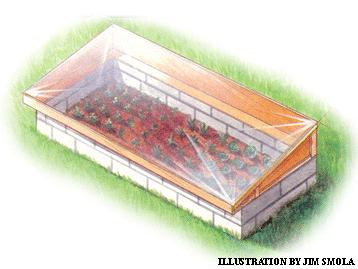
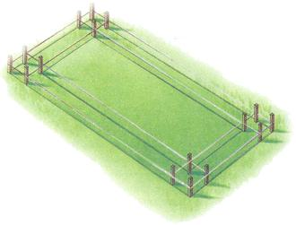
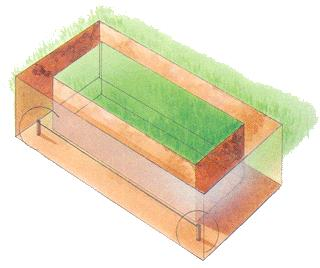
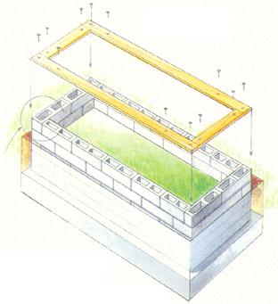
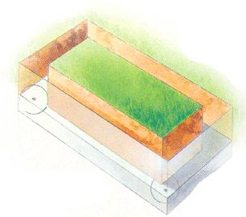
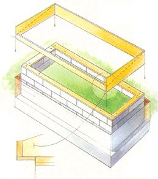
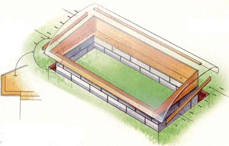
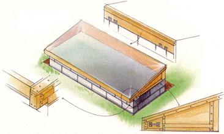
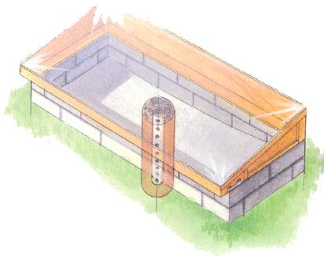
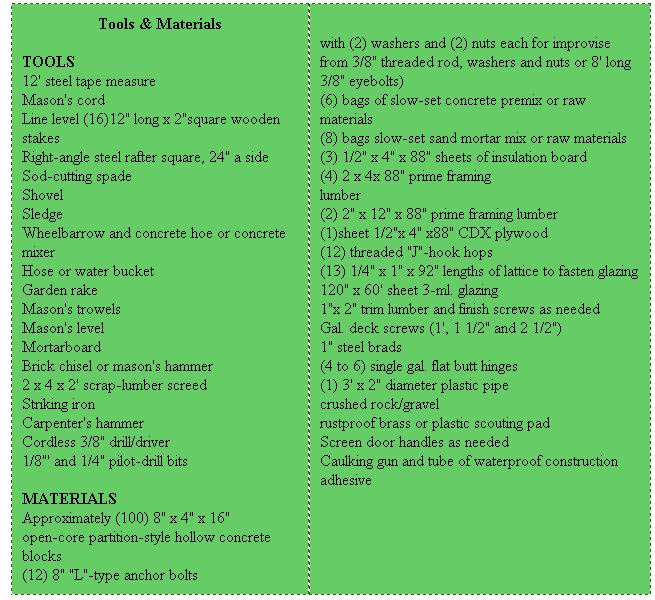

The ""100-Year"" Hotbed
A hotbed that is rugged enough to last for many years, while withstanding the worst weather that nature can muster. The best part is that its easy to build, and you can do it in a weekend.
February/March 2000
Issue # 178 - February/March 2000
by Tony Gross
Here are plans for an industrial-strength hotbed that you can put to use eight months a year or more in most climate zones. It features nearly 18 square feet of protected planting area and a foundation built of lightweight, concrete partition blocks that's worthy of a house
This hotbed is rugged enough to last for many years, while withstanding the worst weather that nature can muster. To good to be true? Hardly. The best part is that it's easy to build, and you can do it in a weekend.
A hotbed allows you to jump-start your garden several weeks early in the spring. In passive mode, it collects and concentrates the sun's heat in a small, confined area - perfect for starting or hardening off seedlings and young plants. It will also protect late plantings of hardy varieties well into the fall. In active mode, when artificially heated the old-time way by a layer of fresh, "hot" livestock manure under the planting medium or else with modern electric heating cables, it can add weeks more onto both ends of the growing season.
1. LAYOUT
Locate your hotbed on shade-free, flat ground. Scalp grass or cut out sod in a rough 4' x 8' rectangle-long dimension running east-west to face south and catch the most sun. Along the inner perimeter of your rectangle, layout an 8"-wide, rectangular trench to be dug to below frost level. This will hold the concrete-pad footer and concrete-block foundation walls of your hotbed. Next, sink stakes at each outside corner of the 4' x 8' plot. Run a line around the outside of the stakes to define outer dimensions of the foundation. The outer corners of your rectangular plot should be 48" apart in the narrow dimension and 96" apart in the long dimension. Use a steel square to make 90° corners. To test squareness, each diagonal should measure precisely 107 1/3" between outside corners of opposing corner stakes.
To lay out the inner walls of the foundation, sink 8 more stakes along each outer-wall string line, 8" in from each side of all 4 corner stakes (measure between outside corners of stakes. Fasten 4 strings between the 8 inner stakes so they run parallel to,and 8" in from, the outer string line. The 8"-wide ribbon between the lines is where your concrete block foundation walls will go. (A fourth stake may be added at each of the four corners, where the inner strings intersect, to mark the inner corners of the foundation walls; see "Layout Lines" illustration.)
Press strings to soil level and using a nontoxic spray paint mark soil under the lines-tracing one rectangle inside another-to define inner and outer boundaries of the 8'-wide trench
2. TRENCH AND FOOTER
Remove stakes and string.
Dig an 8", or more, wide, straight-sided trench under the spray lines. An 18"-to 24"-deep trench with a 4"-thick concrete-pad footer at the bottom is easiest and may he tempting, but it will not last as long as a house quality footer. To prevent frost-heaving in cold country, dig 32" deep or below the frost line in your latitude.
Level bottom of trench by sinking stakes at its corners and using a level-line (a line level on mason's cord wrapped around and over the top of stakes) to set their tops in the same flat plane, 8" above trench bottom. Leaving stakes in place, dry-mix one part Portland cement to 2 parts sand and 3 parts gravel to make a concrete-pad footer that'll go under your block walls. Add water slowly and stir until stiff but pliable. Dump concrete mix into trench and level to tops of stakes with garden rake. Level the top of the concrete by working a 2' length of 2 x 4 back and forth. Trowel surfaces smooth. Let dry overnight. (Alternatively, you can set first course of block in wet concrete.)
3. LAY BLOCK
Arrange blocks around perimeter of trench to lessen carry time. Spray lightly with water if they are bone-dry from inside storage.
Precut partial blocks. Using a brick chisel and hammer or a pointed chisel back end of a mason's hammer, groove surface and tap to split blocks to make: (4) 12" splits for the odd numbered courses, as well as (4) 8" splits and (4) 12" splits for the even courses.
In wheelbarrow or mixer, add water as needed to make a cake-icing smooth mortar from about a half bag of slow-set, masonry sand mortar mix. Mix more as needed, cleaning mixing vessel and tools between mixes. Measuring with angle steel and string, set four 16" concrete blocks to be equidistant and parallel at all four corners of trench; along its inner dimensions, trench should be 32" in width and 80" in length. Run string between outer corners of blocks to describe outer edges of all four sides of wall. Assure that opposing edges are of equal length from outer edge to outer edge of opposing corner blocks (blocks are actually 1/2" short of their nominal dimensions to account for the 1/2" mortar bond between each).
Apply a generous 1/2"-thick pad of mortar to footing and to all edges and partitions of one corner block. Set the block and, using a mason's level on top and sides, tap with handle of trowel so it is firmly seated, level and plumb. Buttering ends of new blocks with mortar to bond with preceding block, continue laying block with top outer edges even with string. Seat, level and plumb each.
To set closure block in each course, liberally cover bed and the work-side vertical edges of abutting blocks, and slide closure block into mortar with taps of the handle. Fill gaps in mortar band as needed.
Use striking tool to compress mortar in all revealed joints on both sides. This compacts mortar and makes for a better, waterproof joint,
The next course should be set so that each block covers the mortar joint between the blocks underneath: set the blocks one over two, two over one, etc., like you would when laying brick for a stone wall, Temporarily dry-lay final three blocks in a course to correct minor errors by widening or narrowing joints.
Once corner blocks of second course are set, move strings up to parallel top edge of this course. Set each block firmly, level and plumb and assure that outer-faces are perfectly even and in the same plane with blocks below.
Depending on thickness of your footing, the fourth course of a 32"-deep foundation should break ground level. Lay two or three more courses (for a total of six or seven) to raise bed to a height that will be comfortable to work with. Strike exposed joints well and remove mortar dribbles from outside surface for best appearance.
When cement is set (in about two hours), use soil to fill in narrow spaces between trench sides and foundation blocks; tamp well.
4. FRAME BASE AND ANCHOR BOLTS
Measuring on the blocks, cut 2 x 4s and identical pieces of 1/2" insulation board to cover the blocks. (You'll need to cut a total of four pieces of each material: two each for the front and back of the hotbed, measuring approximately 88", and two each for the sides, measuring approximately 32.5", so that everything will fit snugly between the forthcoming side boards.)
Drill 1/4"through-holes in boards and underlying insulation board as follows: one at each end of the short and long boards and one at approximately 26" in from each end of the long boards. Be sure that anchor bolt locations in top boards are over a block-core void in the blocks.
Stuff newspaper into bottom third of block-core voids directly under anchor bolts. Fill cores to 1/2' of top with mortar mix. Stack the 2 x 4s atop their matching insulation boards. Fasten threaded end of "J"-hook anchor bolts through drilled holes with a nut and washer on each side of stacked boards. Tighten nuts. Place boards atop foundation blocks and gently tap hooked anchor-ends of bolts into wet concrete. Make sure the edges of the boards are even with outer edges of block wall. Weight board ends and centers with extra blocks till cement is dry (24 hours).
5. THE FRAME
The frame rests atop the 2 x 4s anchored to the foundation.
For the back, cut a 2" x 12" to 88" (or actual width of your foundation).
Cut two 2"x 12"x40" side boards. Stand boards on edge (tacking if needed) atop frame base. Measure on the work and cut to length (85" more or less) a 2 x 4 to fit between front ends of side boards. Mark the side boards to slope in a line from the 12" board width at the back to the 2 x 4 in the front. Finally, cut the angles.
Assemble the frame using 1 1/2' deck screws through 2" square corner cleats or galvanized house-framing brackets and construction adhesive. Add 8" flat steel "L" bracket reinforcements to bottoms of all four corners. Place adhesive under angles as well.
The frame overhangs the front wall of the foundation for easy lifting. Cut a front-overhang reinforcing lip measuring approximately 4" x 88"from a length of 1/2"" exterior plywood and fasten under-front of frame with 1/2" deck screws and adhesive under joints.
Fasten frame to 2 x 4 base with four galvanized flat butt hinges, spaced evenly along the frame's back board. Use galvanized deck screws with adhesive under plates.
To avoid puncturing plastic glazing (and encouraging it to tear in a wind) do not staple or nail through single thicknesses of the sheeting. It is best wrapped around lengths of wood, which are tacked to the frame with long brads.
Starting with a 120" x 60" sheet of 3-millimeter or thicker clear window-grade glazing or plastic sheet, cut the sheet down to approximately 90" x 60". (Option: substitute insulated multicell, semi-flexible plastic greenhouse glazing for 3-millimeter sheet.)
Sand or tape upper edges of frame to safeguard glazing.
Wrap one long edge of plastic glazing around an ap.= approximately 92" length of wood lath or lattice. Tack it to the back of the frame with long wire brads every 6". Apply cement under overhang.
Wrap other long end of sheet around another lath, stretch tight in both dimensions and fasten under overhang. Wrap side sheets around cut-to-fit laths, tighten and fasten to sides of frame.
Untack, tighten and final-fasten sheet at back.
Do not cement anywhere but at front, so you can unfasten rear and side sheet attachments to tighten the plastic.
If the full-frame plastic glazing tends to flap in the wind, install cross-members from front to back of the frame. However, do not fasten the glazing to the cross-members. Instead, stretch lengths of elastic strapping over both the glazing and the cross-members and fasten them to the front and back of the frame.
6. FINISHING BED
Dig out upper 8" or more of sod and topsoil in bed (best done when digging trench).
With pesthole digger, sink a drain hole a yard deep and 8" to 12" across in middle of bed.
Drill 1/4" holes all along and around a 3' length of 2" rigid plastic pipe. Set into hole with tap 8" above bed bottom. Half fill pipe with crushed rack or gravel. Pour and tamp gravel to fill pit around drain pipe. Put a rustproof brass or plastic scouring pad in drainpipe opening to keep out soil particles.
Lay 6" of gravel in bed. Tamp firm. Lay several lengths of cut-to-fit rebar or coarse reinforcing mesh on gravel.
With chalk line or level and chalk, mark a line around inside of blocks, 4" above top of gravel bed.
Mix 4 to 6 bags of slow-set concrete, dump into bed. With garden rake, snag rebar or mesh and pull up into concrete.
Trowel concrete into a basin shape around sump - high edges at chalk mark, low point at center sump mouth.
Cover mouth of sump with landscape cloth that will admit water but keep out sail particles.
(Option: To half fill with manure for an old-style natural hotbed, dig floor 1 1/2" to 2" deeper.)
7. TRIM AND FINISH
To discourage splitting of the back ends of the frame, screw and glue horizontal strips of 1"x 2" board vertically, even with and 4" out from the rear edge on each side.
Trim out frame if you like with lengths of 1" x 2" finishing board along edges. Fasten with brass finish screws; glue several thicknesses of plastic on both sides of glazing where screws penetrate to prevent tearing.
Install standard screen door handles at the sides and on the front for lifting.
Loosely screw to each side of the frame a length of hardwood long enough to be be dropped down to the ground to prop open the hotbed in hot weather. (Option: install a pair of heat-activated automatic hotbed openers one at each side of frame.)
Paint or stain wood with a good weatherproofing finish. Treat surfaces of concrete inside frame and out with a basement water sealer.
After the concrete has cured lip about a week), put a layer of crushed rock in the concrete basin and begin using your new allseason hotbed. If you're using heating cables, bury them in a crushed rock layer. To heat the old-time way, pitch in a 6"-to 2'-deep layer of fresh, "hot" barnyard manure. Then cover it with 6" to 12" of soil (which you'll mix with composted manure when removing or replacing it... makes great starting or potting soil).
As the manure hot-composts over the next four to eight weeks, the heat it generates will warm the soil (indeed, you'll need to keep the lid cracked at times to prevent overheating), keeping your seedlings nice and cozy until the garden plot is ready for planting.
|
 LAYOUT LINES LEVEL TOPS OF STAKES AT CORNERS OF TRENCH |
 ADDING FRAME BASE AND ANCHOR BOLTS |
 TRENCH WITH CONCRETE POURED TO TOP OF STAKES |
|
 BUILDING THE FRAME |
 GLAZING FRAME |
 FINISHING FRAME AND LID |
|
 CONCRETE FLOOR AND SUMP DRAIN |
 |
 |
|
 |
 |
|